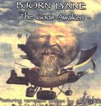

| Artist: | Bjorn Lynne |
| Title: | The Gods Awaken |
| Label: | Proximity Records PR/BL CD 001 |
| Length(s): | 73 minutes |
| Year(s) of release: | 2001 |
| Month of review: | [07/2001] |
| 1) | The Dance Of Hadin | 2.26 |
| 2) | The Sisters Of Asper | 8.13 |
| 3) | Jooli's Song | 7.35 |
| 4) | The Return Of Safar Timura | 7.48 |
| 5) | The Mural | 4.42 |
| 6) | On Conjurer's Seas | 6.16 |
| 7) | King Felino And The Slay Ground | 6.46 |
| 8) | Lottyr, Lady Of The Hells | 7.24 |
| 9) | Two Kings In Hadinland | 14.12 |
| 10) | The Ringmaster | 7.33 |
The Sisters Of Asper opens with harpsichord and repetitively tinkling piano. A really nice and warm melody, one that tells a story. The melody winds its way now on keyboard then on flute. The music now gains in power with the advent of percussion and drums. The ahhh part does not really figure with me, but the eerie guitar and the somewhat tense keyboards make up for it. A song that gets under way really slowly. The more optimistic melodies sound a bit too frolic for my tastes, I feel better at home with the more urgent, tense or forceful parts. It shows that we have a band at work here, the drumming sounding natural and at times Pendragon even comes to mind. At the end the melodies of the beginning return in the subtle form now played on acoustic guitar and the repetitive piano (and yes, the flute is back as well).
Jooli's Song is a bit more playful with some weird sounds in there, but also some Greekish effects and a rather sharp guitar sound. Again, the melodies approach mellowness, with long sensuous melodies, but that's okay. The music is more up-beat, has a more percussive feel notwithstanding. Compared to the other Lynne albums (i.e., not in this series), the music is not necessarily harder or anything, but it is more of a band sound with more varied instrumentation, less electronic.
The Return Of Safar Timura opens with romantic piano. Then the music seems to become much darker, but we also get some echoey ahhs again. Again, the feel of the music is somewhat like Pendragon, that same warm, accessible and melodic sound, but without the vocals. The continuation however struck me as a bit too mellow first, but the melody does take the right turns and some biting guitar sets in to compensate the sweetness.
The Mural is dreamy with acoustic guitar and flute. Something else again, but also uneventful. On Conjurer's Seas brings back the power a bit with its short bites on guitar. The music is as melodious as ever, but putting the bite in to the music does help in making the whole more likable. Some violin on here as well and the acoustic guitar also keeps at it quite a bit on this song (song, the entire record). Some very nice moments on this bouncy track which has parts that remind much of Landmarq (the guitar for instance).
The music gets to become really good on King Felino And The Slay Ground. Lots of dark organ on this track, plenty of sinister mystery. The organ sound will remind some of ELP, but the music has strong imaging. The next melody is also one to cherish. Halfway the percussion sets in.
A familair melody rings out on Lottyr, Lady Of The Hells. A good melody though. The track is rather subdued and too easy-going to keep me focussed. Two Kings In Haddinland is a long track with after some easy acoustics, an abrupt break into something more clear and percussive. Some sequencers as well on this lengthy track combined oftimes with some long hazy notes on guitar. For the remainder this song is more or less what we have come to expect with plenty of melodic variation and on the whole rather easy-going. The guitar playing is clear, clean and full of melody and has that "storytelling" feel. Slowly the track fades out.
The final track is a moody piece with plenty of flute, a low bass, hand claps, mysterious strummings on guitars and shards of piano with a wailing wind in the background and some concluding narration and the song fades away.